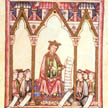
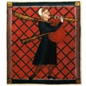
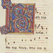
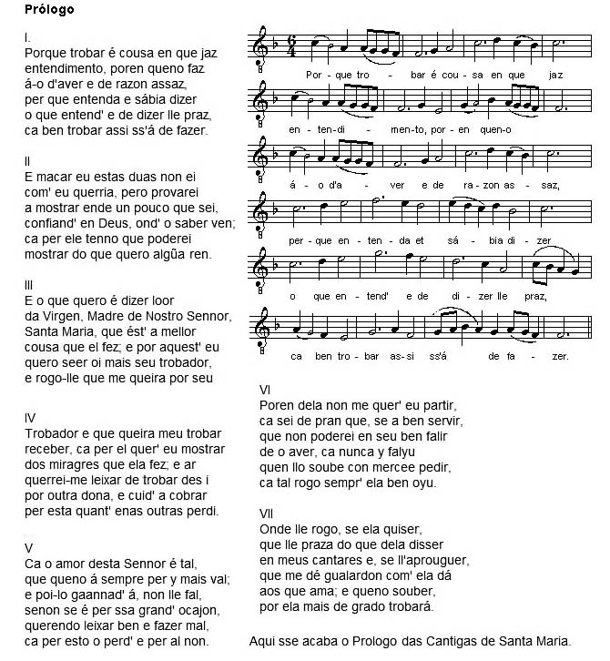
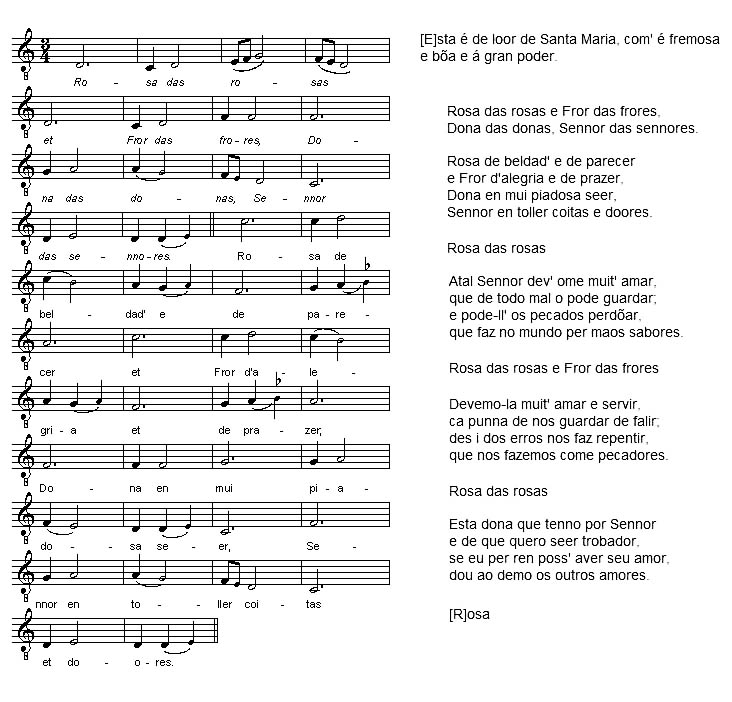

Grabación: Las Cantigas de Santa María de Alfonso X
(Haz clic en el enlace para escuchar la grabación)
1. PrólogoLa música transcrita en los manuscritos de las Cantigas de Santa María, preparados en la segunda mitad del siglo XIII, emplea un nuevo sistema de notación que permite representar los valores rítmicos de las notas, por lo que en las dos grabaciones aquí hay un marcado compás. Uno de los manuscritos contiene además múltiples iluminaciones que representan a músicos tocando una amplia variedad de instrumentos. Estas imágenes parecen indicar que las melodías cantadas se acompañaban con música instrumental. Desgraciadamente no hay ninguna indicación en las partituras sobre el uso de instrumentos. (Algunos intérpretes modernos añaden acompañamiento musical a las melodías, apoyándose en estas iluminaciones.) Por otra parte, las melodías siguen siendo monofónicas, aunque es posible que ciertos instrumentos se utilizaran para crear armonías. A la derecha, dos imágenes: (1) el folio del "Códice Rico" que corresponde al prólogo, con su música y texto; y (2) una selección de los instrumentos incluidos en la copia anterior al Códice Rico. (Hacer clic en las imágenes pequeñas a la derecha permite ver toda la imagen. Haz clic aquí para ver una transcripción modernizada de la música y el texto.) |
. | |
|  | ||
|  | ||
2. Cantiga de loor: “Rosa das rosas”Esta grabación de la primera cantiga de loor de la colección tiene cuatro voces al unísono. Como en el caso de la posible instrumentación, carecemos de indicaciones sobre el número de cantantes que deben interpretar las cantigas, por lo que los intérpretes modernos deben elegir entre cantarlas con un solista o en grupo. Es posible que en la Edad Media los músicos tuvieran bastante libertad a la hora de elegir el número de cantantes o la instrumentación. Haz clic sobre las dos imágenes a la derecha para ver los dos folios del Códice Rico que corresponden a esta cantiga. Haz clic aquí para ver una transcripción modernizada. |
 | |
|  | ||
| Volver al principio | ||
|  | ||
{kind=link}
{kind=link}
{kind=link}
{kind=link}
Grabación original: P. Becker, R. Eisenstein, J. Malafronte, y D. Minter, intérpretes, Teaching Medieval Lyric with Modern Technology, CD 6, (Mt. Holyoke College, 2001)